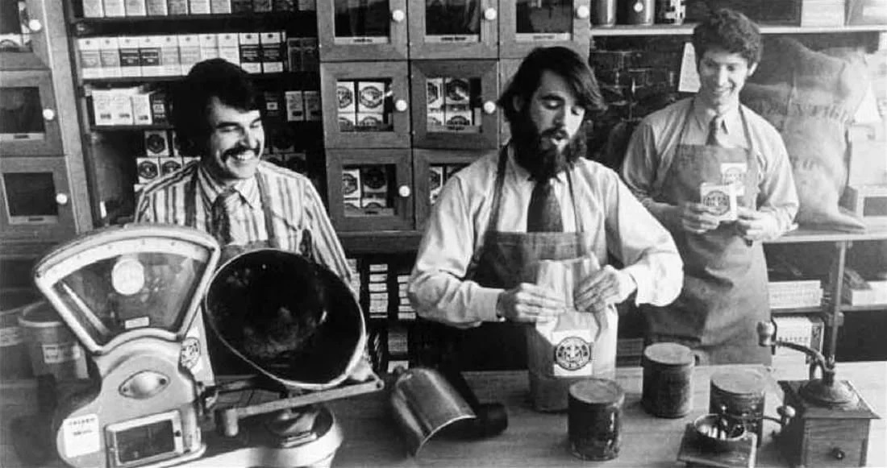
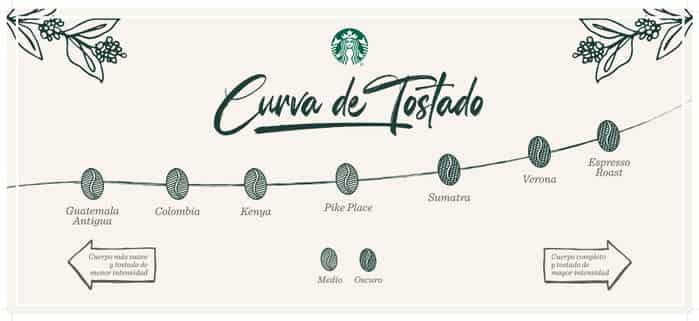
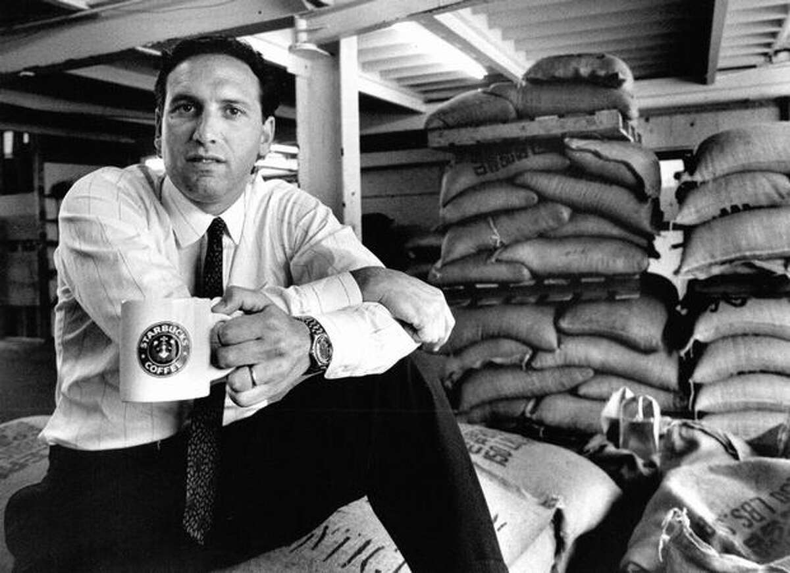

The story of Starbucks coffee is a fascinating blend of entrepreneurship, passion for coffee, and an innovative focus on customer experience. It all began in 1971 in Seattle, Washington, when three friends – Jerry Baldwin, Zev Siegl, and Gordon Bowker – opened a small coffee shop called Starbucks Coffee, Tea, and Spices.

Initially, Starbucks focused on selling freshly roasted coffee beans and equipment for home coffee brewing. However, the store didn't sell prepared coffee to drink. It wasn't until Howard Schultz, a seller of espresso coffee machines, entered the scene in 1982 that Starbucks' story took a significant turn.

Schultz was impressed by the passion and coffee culture in Italy during a business trip. Inspired by the experience of Italian coffeehouses, he suggested to Starbucks' owners that they start selling prepared coffee to drink in the store. Although the owners weren't initially interested, Schultz persisted and eventually opened his own chain of Italian-inspired coffeehouses called Il Giornale.
In 1987, Howard Schultz acquired Starbucks and merged the two companies under the name Starbucks Corporation. From then on, he began to expand the Starbucks brand nationally and internationally, transforming it into the world's largest coffeehouse chain.

What sets Starbucks apart is not only its coffee but also the experience it offers to its customers. From the cozy design of its stores to beverage customization and commitment to sustainability, Starbucks has become a symbol of coffee culture and community worldwide. Additionally, its innovative loyalty program, Starbucks Rewards, has greatly contributed to its success by fostering customer loyalty.
Today, Starbucks is known not only for its high-quality coffee but also for its commitment to social and environmental responsibility, diversity and inclusion, and its constant innovation in the world of beverages and customer experience. The story of Starbucks coffee is an inspiring example of how a small idea can become a global phenomenon.